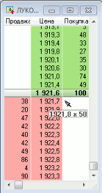
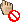

Замена и снятие заявок перетаскиванием мышью
Замену и снятие активных заявок в Таблице котировок
можно выполнять перетаскиванием строки, содержащей собственную заявку.
Режим замены и снятия заявок перетаскиванием мышью включается в окне редактирования Таблицы котировок выбором признака
«Использовать drag-and-drop».
При замене заявки осуществляется изменение ее цены. Количество инструментов в заявке
и ее направленность не изменяются.
Для замены заявки нужно:
- Выбрать курсором строку с активной заявкой пользователя. Чтобы
выделить собственные заявки в окне, рекомендуется включить признак «Выделять
свои заявки» в окне редактирования настроек Таблицы котировок, либо добавить в
список отображаемых параметров значения «Свой объем» (или «Своя покупка» и
«Своя продажа» - в зависимости от выбранного вида котировочного окна).
- Нажать левую или правую кнопку мыши и немного сдвинуть курсор мыши. В
результате курсор изменит свой вид так, как показано на рисунке. Под курсором
отображается подсказка вида: «новая цена заявки» и «количество лотов».
- Удерживая нажатой кнопку
мыши, переместить ее вверх либо вниз по списку. В окне подсказки отобразится
новая цена заявки.

Новая цена заявки рассчитывается при пересечении курсором границы между строками. Если курсор наведен на середину строки, то для заявки выбирается цена в этой строке. Если курсор наведен на границу между строками, то выбирается цена котировки, со стороны которой произведено пересечение границы, цена корректируется на 1 шаг цены по направлению к цене следующей котировки. Для примера на рисунке, при пересечении границы вниз берется цена следующей заявки и уменьшается на 1 шаг цены, чтобы заявка пользователя разместилась между соседними котировками.
Цену заявки можно изменять вращением колесика мыши. Если при этом
удерживать нажатой клавишу «Ctrl», то шаг изменения цены увеличивается в 10
раз.
- Добившись требуемого значения цены, отпустите нажатую кнопку мыши. Если в настройках программы включен признак «Запрашивать подтверждение» (рекомендуется), то на экране появляется окно с требованием подтвердить условия новой заявки. При нажатии кнопки «Да» выполняется снятие активной заявки и выставление новой. При нажатии кнопки «Нет» замена заявки не выполняется.
Если признак «Запрашивать подтверждение» отключен, то замена заявки
выполняется сразу после отпускания нажатой кнопки мыши.
- При изменении цены с помощью курсора мыши обратите
внимание, что для классов рынка LSE используется параметр «Реальный шаг цены» вместо параметра «Минимальный шаг цены» в том случае, когда значение параметра «Реальный шаг цены» больше значения параметра «Минимальный шаг цены».
Если при нажатии кнопки мыши курсор принял вид ,
то замена заявки невозможна.
Возможные причины:
- На выбранной строке в Таблице котировок находится больше одной заявки
пользователя.
- Курсор находится в недопустимом месте окна (на заголовке, границе окна или
панели инструментов).
В этом случае при отпускании кнопки мыши не производится никаких действий с
заявками пользователя.
Для снятия заявки нужно:
- Выбрать курсором строку с активной заявкой пользователя.
- Нажать левую или правую кнопку мыши.
- Переместить курсор за пределы
Таблицы котировок. Курсор изменит вид так, как показано на рисунке.
- Отпустить нажатую кнопку мыши. Если в настройках программы включен признак
«Запрашивать подтверждение» (рекомендуется), то на экране появится окно с
требованием подтвердить снятие заявки. При нажатии кнопки «Да» выполняется
отмена активной заявки. При нажатии кнопки «Отмена» снятие заявки не
выполняется.
Если признак «Запрашивать подтверждение» отключен, то снятие заявки
выполняется сразу после отпускания нажатой кнопки мыши.
Если необходимо отказаться от замены или снятия заявки при уже нажатой кнопке
мыши, то можно навести курсор на заголовок окна (он примет вид ) и отпустить нажатую кнопку, либо нажать клавишу
«Esc».